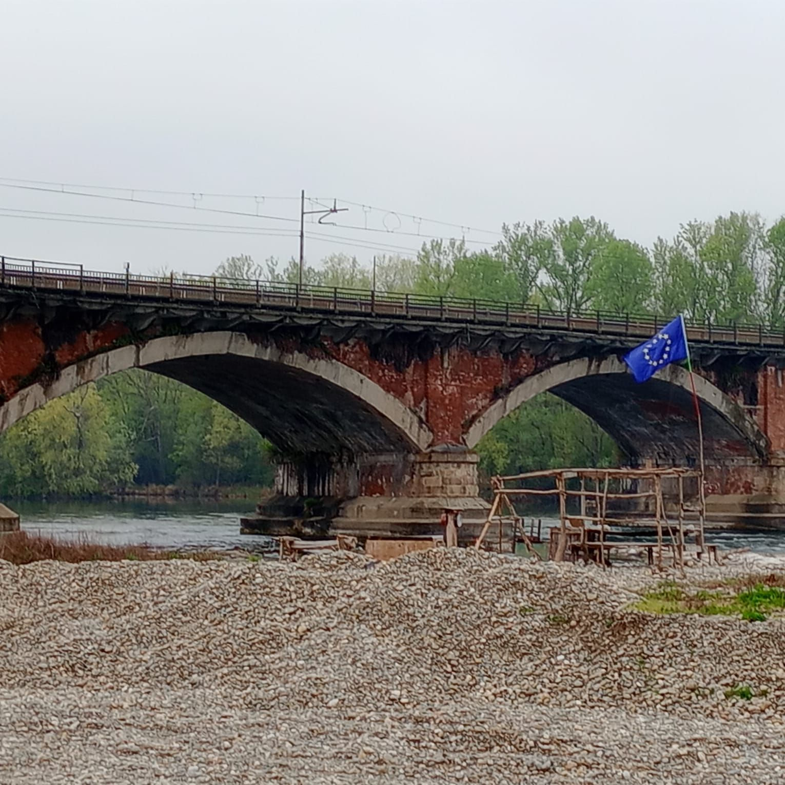
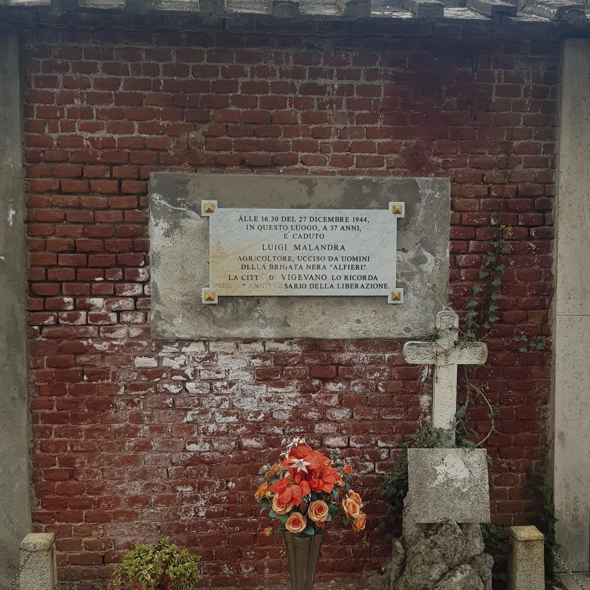
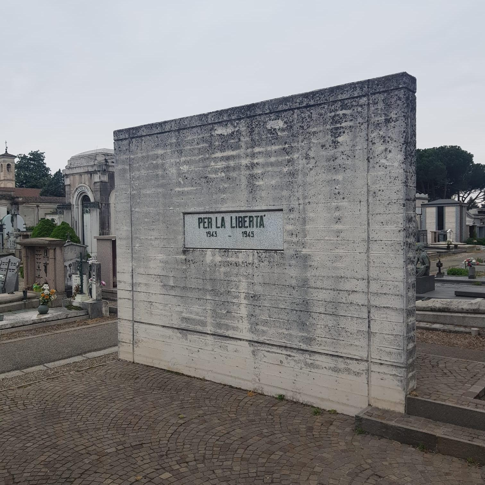
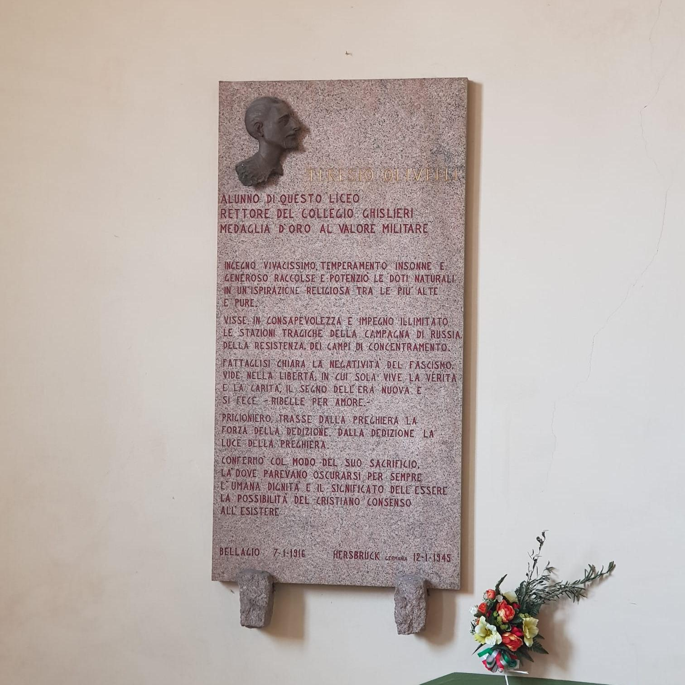
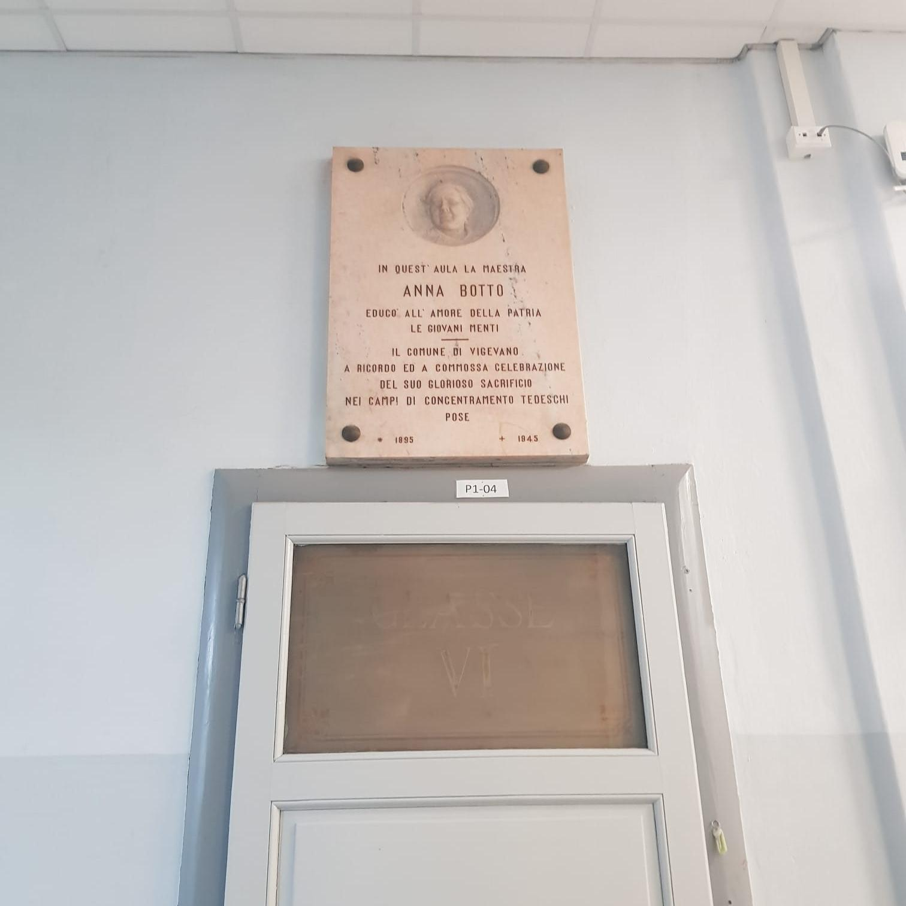
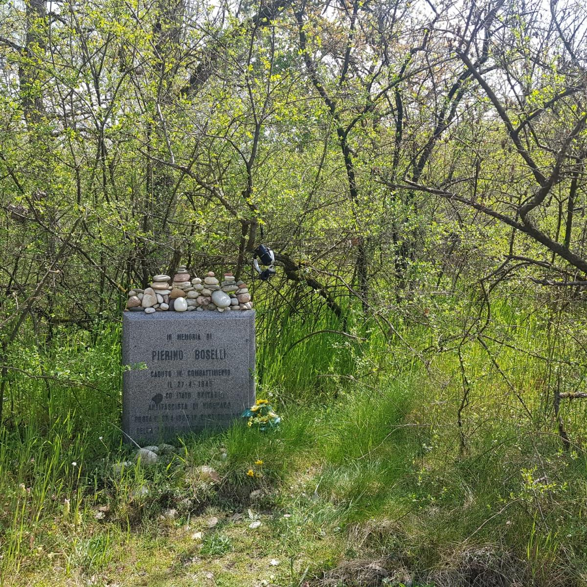

<!DOCTYPE html>
<head>
    <meta http-equiv="content-type" content="text/html; charset=UTF-8" />

        <script>
            L_NO_TOUCH = false;
            L_DISABLE_3D = false;
        </script>

<style>html, body {width: 100%;height: 100%;margin: 0;padding: 0;}</style>
<style>#map {position:absolute;top:0;bottom:0;right:0;left:0;}</style>
<script src="lib/Leaflet/leaflet.js"></script>
<link rel="stylesheet" href="lib/EasyButton-master/src/easy-button.css">
<script src="lib/EasyButton-master/src/easy-button.js"></script>
<script src="js_scripts/jquery-1.12.4.min.js"></script>
<script src="js_scripts/bootstrap.min.js"></script>
<script src="lib/Leaflet/leaflet.awesome-markers.js"></script>
<link rel="stylesheet" href="lib/Leaflet/leaflet.css"/>
<link rel="stylesheet" href="css/bootstrap.min.css"/>
<link rel="stylesheet" href="css/bootstrap-theme.min.css"/>
<link rel="stylesheet" href="css/font-awesome.min.css"/>
<link rel="stylesheet" href="lib/Leaflet/leaflet.awesome-markers.css"/>
<link rel="stylesheet" href="lib/Leaflet/leaflet.awesome.rotate.min.css"/>

            <meta name="viewport" content="width=device-width,
                initial-scale=1.0, maximum-scale=1.0, user-scalable=no" />
            <style>
                #map_2028d453e4d04be39002f7e87a505b85 {
                    position: relative;
                    width: 100.0%;
                    height: 100.0%;
                    left: 0.0%;
                    top: 0.0%;
                }
            </style>

</head>
<body>

            <div class="folium-map" id="map_2028d453e4d04be39002f7e87a505b85" ></div>

</body>
<script>


            var marker_7be81b370319492f940fe474df4aa290 = L.marker(
                [45.3157274368169, 8.8518999516964],
                {}
            );


        var custom_icon_858fa14eac9b4a5da2fe599c95ce9dd7 = L.icon({"iconSize": [30, 30], "iconUrl": "https://gui-doh.github.io/RESISTENZE/v10/images/icon.png"});
        marker_7be81b370319492f940fe474df4aa290.setIcon(custom_icon_858fa14eac9b4a5da2fe599c95ce9dd7);


        var popup_c082c6b633a249b59f1e6f46c30e8d31 = L.popup({"maxWidth": "270"});


            var html_51896723d4a749a283d408152fa87a13 = $(`<div id="html_51896723d4a749a283d408152fa87a13" style="width: 100.0%; height: 100.0%;"><h1 style = "font-size: 30px;"><b>Testimonianza di lotta, libertà e pace nel nome della resistenza</b></h1><br><a href="mailto:info@ecologiaacustica.org;satorcollettivonoise@gmail.com?subject=PAESAGGIO SONORO --- [segnalazione] --- audio: Testimonianza di lotta, libertà e pace nel nome della resistenza"><i><br>Facci sapere cosa ne pensi di questo audio!</a><audio id="audio_01_PARCO_PARRI" loop> <source src="dati/01_PARCO_PARRI/ZOOM0011_parco_parri.mp3" type="audio/mpeg"> </audio></div>`)[0];
            popup_c082c6b633a249b59f1e6f46c30e8d31.setContent(html_51896723d4a749a283d408152fa87a13);


        marker_7be81b370319492f940fe474df4aa290.bindPopup(popup_c082c6b633a249b59f1e6f46c30e8d31)
marker_7be81b370319492f940fe474df4aa290.on('click', function (e) {this.openPopup(); document.getElementById('audio_01_PARCO_PARRI').play();});
        ;


            var marker_9e6f37a968e941c58ae2d05d2d1acc26 = L.marker(
                [45.3166090900776, 8.85581195354462],
                {}
            );


        var custom_icon_75a350d5a18041c09df147451584c063 = L.icon({"iconSize": [30, 30], "iconUrl": "https://gui-doh.github.io/RESISTENZE/v10/images/icon.png"});
        marker_9e6f37a968e941c58ae2d05d2d1acc26.setIcon(custom_icon_75a350d5a18041c09df147451584c063);


        var popup_5a7f62a2dc29445a9e952457af9c38d5 = L.popup({"maxWidth": "270"});


            var html_5c13c3d28fea4bdd94a49af18e10e6c1 = $(`<div id="html_5c13c3d28fea4bdd94a49af18e10e6c1" style="width: 100.0%; height: 100.0%;"><h1 style = "font-size: 30px;"><b>Pietra d'inciampo Anna Botto</b></h1><br><a href="mailto:info@ecologiaacustica.org;satorcollettivonoise@gmail.com?subject=PAESAGGIO SONORO --- [segnalazione] --- audio: Pietra d'inciampo Anna Botto"><i><br>Facci sapere cosa ne pensi di questo audio!</a><audio id="audio_02_VIA_DEL_POPOLO_PIETRA" loop> <source src="dati/02_VIA_DEL_POPOLO_PIETRA/ZOOM0002_via_del_popolo.mp3" type="audio/mpeg"> </audio></div>`)[0];
            popup_5a7f62a2dc29445a9e952457af9c38d5.setContent(html_5c13c3d28fea4bdd94a49af18e10e6c1);


        marker_9e6f37a968e941c58ae2d05d2d1acc26.bindPopup(popup_5a7f62a2dc29445a9e952457af9c38d5)
marker_9e6f37a968e941c58ae2d05d2d1acc26.on('click', function (e) {this.openPopup(); document.getElementById('audio_02_VIA_DEL_POPOLO_PIETRA').play();});
        ;


            var marker_2e1d207b4bda4588b15d302debe0d208 = L.marker(
                [45.3161573675983, 8.85633364319802],
                {}
            );


        var custom_icon_72f6ed5ee3ca4e39a717eeba9e65cd0c = L.icon({"iconSize": [30, 30], "iconUrl": "https://gui-doh.github.io/RESISTENZE/v10/images/icon.png"});
        marker_2e1d207b4bda4588b15d302debe0d208.setIcon(custom_icon_72f6ed5ee3ca4e39a717eeba9e65cd0c);


        var popup_7ec0ed632ada4853bcec40d890b6d934 = L.popup({"maxWidth": "270"});


            var html_913c3cae8a7a422b9f1b67387a3f2d7d = $(`<div id="html_913c3cae8a7a422b9f1b67387a3f2d7d" style="width: 100.0%; height: 100.0%;"><h1 style = "font-size: 30px;"><b>Fucilazione di Carlo Gazzo, Giovanni Profili, Salvatore Frascona</b></h1><br><a href="mailto:info@ecologiaacustica.org;satorcollettivonoise@gmail.com?subject=PAESAGGIO SONORO --- [segnalazione] --- audio: Fucilazione di Carlo Gazzo, Giovanni Profili, Salvatore Frascona"><i><br>Facci sapere cosa ne pensi di questo audio!</a><audio id="audio_03_CASTELLO_LAPIDE_GAZZO" loop> <source src="dati/03_CASTELLO_LAPIDE_GAZZO/ZOOM0003_gazzo.mp3" type="audio/mpeg"> </audio></div>`)[0];
            popup_7ec0ed632ada4853bcec40d890b6d934.setContent(html_913c3cae8a7a422b9f1b67387a3f2d7d);


        marker_2e1d207b4bda4588b15d302debe0d208.bindPopup(popup_7ec0ed632ada4853bcec40d890b6d934)
marker_2e1d207b4bda4588b15d302debe0d208.on('click', function (e) {this.openPopup(); document.getElementById('audio_03_CASTELLO_LAPIDE_GAZZO').play();});
        ;


            var marker_3a43566c358e487f96f95d52c5dec532 = L.marker(
                [45.3165836277371, 8.85663539171219],
                {}
            );


        var custom_icon_f7dd478226a641afb4366d60162e73d3 = L.icon({"iconSize": [30, 30], "iconUrl": "https://gui-doh.github.io/RESISTENZE/v10/images/icon.png"});
        marker_3a43566c358e487f96f95d52c5dec532.setIcon(custom_icon_f7dd478226a641afb4366d60162e73d3);


        var popup_84bbe3c07e8d47f08a54957cf5c41b8c = L.popup({"maxWidth": "270"});


            var html_c3ca75f0e42b4e3f98dbe2d292e2b216 = $(`<div id="html_c3ca75f0e42b4e3f98dbe2d292e2b216" style="width: 100.0%; height: 100.0%;"><h1 style = "font-size: 30px;"><b>Fucilazione di Giovanni Leoni</b></h1><br><a href="mailto:info@ecologiaacustica.org;satorcollettivonoise@gmail.com?subject=PAESAGGIO SONORO --- [segnalazione] --- audio: Fucilazione di Giovanni Leoni"><i><br>Facci sapere cosa ne pensi di questo audio!</a><audio id="audio_04_CASTELLO_LAPIDE_LEONI" loop> <source src="dati/04_CASTELLO_LAPIDE_LEONI/ZOOM0004_leoni.mp3" type="audio/mpeg"> </audio></div>`)[0];
            popup_84bbe3c07e8d47f08a54957cf5c41b8c.setContent(html_c3ca75f0e42b4e3f98dbe2d292e2b216);


        marker_3a43566c358e487f96f95d52c5dec532.bindPopup(popup_84bbe3c07e8d47f08a54957cf5c41b8c)
marker_3a43566c358e487f96f95d52c5dec532.on('click', function (e) {this.openPopup(); document.getElementById('audio_04_CASTELLO_LAPIDE_LEONI').play();});
        ;


            var marker_90e5835879044f128f20d3cdd19aa251 = L.marker(
                [45.3183527616524, 8.85887637734413],
                {}
            );


        var custom_icon_50f4b4fd31814acab5265bf40d8d561d = L.icon({"iconSize": [30, 30], "iconUrl": "https://gui-doh.github.io/RESISTENZE/v10/images/icon.png"});
        marker_90e5835879044f128f20d3cdd19aa251.setIcon(custom_icon_50f4b4fd31814acab5265bf40d8d561d);


        var popup_b89cdd0841344777b9a8be94e115ae58 = L.popup({"maxWidth": "270"});


            var html_33082602abb644e68ec066539f0d53b4 = $(`<div id="html_33082602abb644e68ec066539f0d53b4" style="width: 100.0%; height: 100.0%;"><h1 style = "font-size: 30px;"><b>Piazza martiri della Liberazione</b></h1><br><a href="mailto:info@ecologiaacustica.org;satorcollettivonoise@gmail.com?subject=PAESAGGIO SONORO --- [segnalazione] --- audio: Piazza martiri della Liberazione"><i><br>Facci sapere cosa ne pensi di questo audio!</a><audio id="audio_05_SAN_DIONIGI_LAPIDI" loop> <source src="dati/05_SAN_DIONIGI_LAPIDI/ZOOM0005_san_dionigi_lapidi_v02.mp3" type="audio/mpeg"> </audio></div>`)[0];
            popup_b89cdd0841344777b9a8be94e115ae58.setContent(html_33082602abb644e68ec066539f0d53b4);


        marker_90e5835879044f128f20d3cdd19aa251.bindPopup(popup_b89cdd0841344777b9a8be94e115ae58)
marker_90e5835879044f128f20d3cdd19aa251.on('click', function (e) {this.openPopup(); document.getElementById('audio_05_SAN_DIONIGI_LAPIDI').play();});
        ;


            var marker_434879b2107d43feb500378c1d0ba24a = L.marker(
                [45.3183084396756, 8.85885626077652],
                {}
            );


        var custom_icon_7811f9654faf454f862861bbedb996df = L.icon({"iconSize": [30, 30], "iconUrl": "https://gui-doh.github.io/RESISTENZE/v10/images/icon.png"});
        marker_434879b2107d43feb500378c1d0ba24a.setIcon(custom_icon_7811f9654faf454f862861bbedb996df);


        var popup_17e7ccfc3968407ab49f674ea3ff88a0 = L.popup({"maxWidth": "270"});


            var html_3e8009a800b54729a56485a63988a511 = $(`<div id="html_3e8009a800b54729a56485a63988a511" style="width: 100.0%; height: 100.0%;"><h1 style = "font-size: 30px;"><b>Pietre d'inciampo Ermes Testori e Santino Bonafin</b></h1><br><a href="mailto:info@ecologiaacustica.org;satorcollettivonoise@gmail.com?subject=PAESAGGIO SONORO --- [segnalazione] --- audio: Pietre d'inciampo Ermes Testori e Santino Bonafin"><i><br>Facci sapere cosa ne pensi di questo audio!</a><audio id="audio_06_SAN_DIONIGI_PIETRE" loop> <source src="dati/06_SAN_DIONIGI_PIETRE/ZOOM0006_san_dionigi_pietre.mp3" type="audio/mpeg"> </audio></div>`)[0];
            popup_17e7ccfc3968407ab49f674ea3ff88a0.setContent(html_3e8009a800b54729a56485a63988a511);


        marker_434879b2107d43feb500378c1d0ba24a.bindPopup(popup_17e7ccfc3968407ab49f674ea3ff88a0)
marker_434879b2107d43feb500378c1d0ba24a.on('click', function (e) {this.openPopup(); document.getElementById('audio_06_SAN_DIONIGI_PIETRE').play();});
        ;


            var marker_7e7c527e8ef74e96bf36d52ea69e8efa = L.marker(
                [45.3142665068648, 8.85942488908768],
                {}
            );


        var custom_icon_11235e11f62b47b3ad4339ec253b26fb = L.icon({"iconSize": [30, 30], "iconUrl": "https://gui-doh.github.io/RESISTENZE/v10/images/icon.png"});
        marker_7e7c527e8ef74e96bf36d52ea69e8efa.setIcon(custom_icon_11235e11f62b47b3ad4339ec253b26fb);


        var popup_c39b0221bd904047b8981dbda7cfdb45 = L.popup({"maxWidth": "270"});


            var html_e9895870f7bc452fbf744b29d9921601 = $(`<div id="html_e9895870f7bc452fbf744b29d9921601" style="width: 100.0%; height: 100.0%;"><h1 style = "font-size: 30px;"><b>Pietra d'inciampo Teresio Olivelli</b></h1><br><a href="mailto:info@ecologiaacustica.org;satorcollettivonoise@gmail.com?subject=PAESAGGIO SONORO --- [segnalazione] --- audio: Pietra d'inciampo Teresio Olivelli"><i><br>Facci sapere cosa ne pensi di questo audio!</a><audio id="audio_07_CAIROLI_FUORI_PIETRA" loop> <source src="dati/07_CAIROLI_FUORI_PIETRA/ZOOM0007_cairoli_pietra.mp3" type="audio/mpeg"> </audio></div>`)[0];
            popup_c39b0221bd904047b8981dbda7cfdb45.setContent(html_e9895870f7bc452fbf744b29d9921601);


        marker_7e7c527e8ef74e96bf36d52ea69e8efa.bindPopup(popup_c39b0221bd904047b8981dbda7cfdb45)
marker_7e7c527e8ef74e96bf36d52ea69e8efa.on('click', function (e) {this.openPopup(); document.getElementById('audio_07_CAIROLI_FUORI_PIETRA').play();});
        ;


            var marker_92d79cc0fc844621b078e688ab4dee59 = L.marker(
                [45.3127707488938, 8.86206418275833],
                {}
            );


        var custom_icon_f3e81776f1b64ecc8392b1a0c9fcf23f = L.icon({"iconSize": [30, 30], "iconUrl": "https://gui-doh.github.io/RESISTENZE/v10/images/icon.png"});
        marker_92d79cc0fc844621b078e688ab4dee59.setIcon(custom_icon_f3e81776f1b64ecc8392b1a0c9fcf23f);


        var popup_944ab26977e946488bcfb75163acabbb = L.popup({"maxWidth": "270"});


            var html_63f6175b85664351848bb1bae1b4484f = $(`<div id="html_63f6175b85664351848bb1bae1b4484f" style="width: 100.0%; height: 100.0%;"><h1 style = "font-size: 30px;"><b>La stazione, luogo della battaglia del treno</b></h1><br><a href="mailto:info@ecologiaacustica.org;satorcollettivonoise@gmail.com?subject=PAESAGGIO SONORO --- [segnalazione] --- audio: La stazione, luogo della battaglia del treno"><i><br>Facci sapere cosa ne pensi di questo audio!</a><audio id="audio_08_STAZIONE" loop> <source src="dati/08_STAZIONE/ZOOM0008_stazione_dei_treni.mp3" type="audio/mpeg"> </audio></div>`)[0];
            popup_944ab26977e946488bcfb75163acabbb.setContent(html_63f6175b85664351848bb1bae1b4484f);


        marker_92d79cc0fc844621b078e688ab4dee59.bindPopup(popup_944ab26977e946488bcfb75163acabbb)
marker_92d79cc0fc844621b078e688ab4dee59.on('click', function (e) {this.openPopup(); document.getElementById('audio_08_STAZIONE').play();});
        ;


            var marker_df488f6de1b7467489444f557e140853 = L.marker(
                [45.306211959457, 8.85309487581253],
                {}
            );


        var custom_icon_9b948a5d38b84687af81565c838edcb1 = L.icon({"iconSize": [30, 30], "iconUrl": "https://gui-doh.github.io/RESISTENZE/v10/images/icon.png"});
        marker_df488f6de1b7467489444f557e140853.setIcon(custom_icon_9b948a5d38b84687af81565c838edcb1);


        var popup_a7d325c1ca4f4d28ab171a6da3c9777e = L.popup({"maxWidth": "270"});


            var html_f88cc16ffb604e74b07a57f602f16900 = $(`<div id="html_f88cc16ffb604e74b07a57f602f16900" style="width: 100.0%; height: 100.0%;"><h1 style = "font-size: 30px;"><b>Lapide a Teresio Olivelli</b></h1><br><a href="mailto:info@ecologiaacustica.org;satorcollettivonoise@gmail.com?subject=PAESAGGIO SONORO --- [segnalazione] --- audio: Lapide a Teresio Olivelli"><i><br>Facci sapere cosa ne pensi di questo audio!</a><audio id="audio_09_CSO_GENOVA" loop> <source src="dati/09_CSO_GENOVA/ZOOM0010_cso_genova.mp3" type="audio/mpeg"> </audio></div>`)[0];
            popup_a7d325c1ca4f4d28ab171a6da3c9777e.setContent(html_f88cc16ffb604e74b07a57f602f16900);


        marker_df488f6de1b7467489444f557e140853.bindPopup(popup_a7d325c1ca4f4d28ab171a6da3c9777e)
marker_df488f6de1b7467489444f557e140853.on('click', function (e) {this.openPopup(); document.getElementById('audio_09_CSO_GENOVA').play();});
        ;


            var marker_db1b0b0fcbd843258a479b720ede0375 = L.marker(
                [45.3226263689976, 8.85598361492157],
                {}
            );


        var custom_icon_e37b11fd5ae3484b85b7be244f413306 = L.icon({"iconSize": [30, 30], "iconUrl": "https://gui-doh.github.io/RESISTENZE/v10/images/icon.png"});
        marker_db1b0b0fcbd843258a479b720ede0375.setIcon(custom_icon_e37b11fd5ae3484b85b7be244f413306);


        var popup_3d17b51c8fa0487f9e022af123259940 = L.popup({"maxWidth": "270"});


            var html_dc5a3aedca0b464ca56bb663e4e75817 = $(`<div id="html_dc5a3aedca0b464ca56bb663e4e75817" style="width: 100.0%; height: 100.0%;"><h1 style = "font-size: 30px;"><b>Caserma dei Vigili del fuoco</b></h1><br><a href="mailto:info@ecologiaacustica.org;satorcollettivonoise@gmail.com?subject=PAESAGGIO SONORO --- [segnalazione] --- audio: Caserma dei Vigili del fuoco"><i><br>Facci sapere cosa ne pensi di questo audio!</a><audio id="audio_10_VVF" loop> <source src="dati/10_VVF/ZOOM0012_vvf.mp3" type="audio/mpeg"> </audio></div>`)[0];
            popup_3d17b51c8fa0487f9e022af123259940.setContent(html_dc5a3aedca0b464ca56bb663e4e75817);


        marker_db1b0b0fcbd843258a479b720ede0375.bindPopup(popup_3d17b51c8fa0487f9e022af123259940)
marker_db1b0b0fcbd843258a479b720ede0375.on('click', function (e) {this.openPopup(); document.getElementById('audio_10_VVF').play();});
        ;


            var marker_97e392b31df845db8f9316386e928fe2 = L.marker(
                [45.34097602, 8.879753351],
                {}
            );


        var custom_icon_79ad0061ed4a453baa65202af0d860b6 = L.icon({"iconSize": [30, 30], "iconUrl": "https://gui-doh.github.io/RESISTENZE/v10/images/icon.png"});
        marker_97e392b31df845db8f9316386e928fe2.setIcon(custom_icon_79ad0061ed4a453baa65202af0d860b6);


        var popup_b53f0af2c23643bcabba043abfec85b7 = L.popup({"maxWidth": "270"});


            var html_f27878b5f8ee4030a2d37d610f64728a = $(`<div id="html_f27878b5f8ee4030a2d37d610f64728a" style="width: 100.0%; height: 100.0%;"><h1 style = "font-size: 30px;"><b>Ponte sul Ticino</b></h1><br><a href="mailto:info@ecologiaacustica.org;satorcollettivonoise@gmail.com?subject=PAESAGGIO SONORO --- [segnalazione] --- audio: Ponte sul Ticino"><i><br>Facci sapere cosa ne pensi di questo audio!</a><audio id="audio_11_PONTE" loop> <source src="dati/11_PONTE/ZOOM0024_elab-converted.mp3" type="audio/mpeg"> </audio></div>`)[0];
            popup_b53f0af2c23643bcabba043abfec85b7.setContent(html_f27878b5f8ee4030a2d37d610f64728a);


        marker_97e392b31df845db8f9316386e928fe2.bindPopup(popup_b53f0af2c23643bcabba043abfec85b7)
marker_97e392b31df845db8f9316386e928fe2.on('click', function (e) {this.openPopup(); document.getElementById('audio_11_PONTE').play();});
        ;


            var marker_7cebd0a7c7c142be890f08ec546a3fb3 = L.marker(
                [45.326333, 8.867916],
                {}
            );


        var custom_icon_25fbd615f3f144de98659231ee6830a9 = L.icon({"iconSize": [30, 30], "iconUrl": "https://gui-doh.github.io/RESISTENZE/v10/images/icon.png"});
        marker_7cebd0a7c7c142be890f08ec546a3fb3.setIcon(custom_icon_25fbd615f3f144de98659231ee6830a9);


        var popup_e6ac482fddd1416cb32c12c0208b2534 = L.popup({"maxWidth": "270"});


            var html_6b3362d9456a414391511629a685f159 = $(`<div id="html_6b3362d9456a414391511629a685f159" style="width: 100.0%; height: 100.0%;"><h1 style = "font-size: 30px;"><b>Lapide a Luigi Malandra</b></h1><br><a href="mailto:info@ecologiaacustica.org;satorcollettivonoise@gmail.com?subject=PAESAGGIO SONORO --- [segnalazione] --- audio: Lapide a Luigi Malandra"><i><br>Facci sapere cosa ne pensi di questo audio!</a><audio id="audio_12_CIMITERO_ESTERNO" loop> <source src="dati/12_CIMITERO_ESTERNO/lapide_luigi_malandra_cimitero_muro_esterno.mp3" type="audio/mpeg"> </audio></div>`)[0];
            popup_e6ac482fddd1416cb32c12c0208b2534.setContent(html_6b3362d9456a414391511629a685f159);


        marker_7cebd0a7c7c142be890f08ec546a3fb3.bindPopup(popup_e6ac482fddd1416cb32c12c0208b2534)
marker_7cebd0a7c7c142be890f08ec546a3fb3.on('click', function (e) {this.openPopup(); document.getElementById('audio_12_CIMITERO_ESTERNO').play();});
        ;


            var marker_c6d35db4a6fc45438aff50b73cf9e585 = L.marker(
                [45.328766, 8.86795],
                {}
            );


        var custom_icon_049f574ad5734eabb501ae7e9e75e900 = L.icon({"iconSize": [30, 30], "iconUrl": "https://gui-doh.github.io/RESISTENZE/v10/images/icon.png"});
        marker_c6d35db4a6fc45438aff50b73cf9e585.setIcon(custom_icon_049f574ad5734eabb501ae7e9e75e900);


        var popup_a851c31340cd4c0b8278207faf96680a = L.popup({"maxWidth": "270"});


            var html_113c66ad48f242edbba274c5cfff1b10 = $(`<div id="html_113c66ad48f242edbba274c5cfff1b10" style="width: 100.0%; height: 100.0%;"><h1 style = "font-size: 30px;"><b>Sacrario</b></h1><br><a href="mailto:info@ecologiaacustica.org;satorcollettivonoise@gmail.com?subject=PAESAGGIO SONORO --- [segnalazione] --- audio: Sacrario"><i><br>Facci sapere cosa ne pensi di questo audio!</a><audio id="audio_13_CIMITERO_INTERNO" loop> <source src="dati/13_CIMITERO_INTERNO/sacrario_interno_cimitero_45.328766_08.867950.mp3" type="audio/mpeg"> </audio></div>`)[0];
            popup_a851c31340cd4c0b8278207faf96680a.setContent(html_113c66ad48f242edbba274c5cfff1b10);


        marker_c6d35db4a6fc45438aff50b73cf9e585.bindPopup(popup_a851c31340cd4c0b8278207faf96680a)
marker_c6d35db4a6fc45438aff50b73cf9e585.on('click', function (e) {this.openPopup(); document.getElementById('audio_13_CIMITERO_INTERNO').play();});
        ;


            var marker_d2344d00e0164df9a5eab4dcdfbbed2b = L.marker(
                [45.3143004580377, 8.85922104120255],
                {}
            );


        var custom_icon_dfa6e70991684c8b8e2ad7c4a15c8d43 = L.icon({"iconSize": [30, 30], "iconUrl": "https://gui-doh.github.io/RESISTENZE/v10/images/icon.png"});
        marker_d2344d00e0164df9a5eab4dcdfbbed2b.setIcon(custom_icon_dfa6e70991684c8b8e2ad7c4a15c8d43);


        var popup_56f727c7edec4c1fac79f5b6d3f0bfa2 = L.popup({"maxWidth": "270"});


            var html_3ea326cb64ac44738e1750ed0a40fa0e = $(`<div id="html_3ea326cb64ac44738e1750ed0a40fa0e" style="width: 100.0%; height: 100.0%;"><h1 style = "font-size: 30px;"><b>Lapide a Teresio Olivelli</b></h1><br><a href="mailto:info@ecologiaacustica.org;satorcollettivonoise@gmail.com?subject=PAESAGGIO SONORO --- [segnalazione] --- audio: Lapide a Teresio Olivelli"><i><br>Facci sapere cosa ne pensi di questo audio!</a><audio id="audio_14_SCALONE_LICEO" loop> <source src="dati/14_SCALONE_LICEO/lapide_olivelli_teresio_scalone_liceo.mp3" type="audio/mpeg"> </audio></div>`)[0];
            popup_56f727c7edec4c1fac79f5b6d3f0bfa2.setContent(html_3ea326cb64ac44738e1750ed0a40fa0e);


        marker_d2344d00e0164df9a5eab4dcdfbbed2b.bindPopup(popup_56f727c7edec4c1fac79f5b6d3f0bfa2)
marker_d2344d00e0164df9a5eab4dcdfbbed2b.on('click', function (e) {this.openPopup(); document.getElementById('audio_14_SCALONE_LICEO').play();});
        ;


            var marker_01933795926e4a248f508cd3ef57bf87 = L.marker(
                [45.319111888001, 8.86152774095536],
                {}
            );


        var custom_icon_8837f31c84c9404fb8b0a4230b298bfb = L.icon({"iconSize": [30, 30], "iconUrl": "https://gui-doh.github.io/RESISTENZE/v10/images/icon.png"});
        marker_01933795926e4a248f508cd3ef57bf87.setIcon(custom_icon_8837f31c84c9404fb8b0a4230b298bfb);


        var popup_ceb16ff1fe274355a78037f0d023d516 = L.popup({"maxWidth": "270"});


            var html_be2aaee5545b41758f28ca3ec73eb792 = $(`<div id="html_be2aaee5545b41758f28ca3ec73eb792" style="width: 100.0%; height: 100.0%;"><h1 style = "font-size: 30px;"><b>Lapide a Anna Botto</b></h1><br><a href="mailto:info@ecologiaacustica.org;satorcollettivonoise@gmail.com?subject=PAESAGGIO SONORO --- [segnalazione] --- audio: Lapide a Anna Botto"><i><br>Facci sapere cosa ne pensi di questo audio!</a><audio id="audio_15_REGINA_MARGHERITA" loop> <source src="dati/15_REGINA_MARGHERITA/regina_margherita_targa_Anna_Botto.mp3" type="audio/mpeg"> </audio></div>`)[0];
            popup_ceb16ff1fe274355a78037f0d023d516.setContent(html_be2aaee5545b41758f28ca3ec73eb792);


        marker_01933795926e4a248f508cd3ef57bf87.bindPopup(popup_ceb16ff1fe274355a78037f0d023d516)
marker_01933795926e4a248f508cd3ef57bf87.on('click', function (e) {this.openPopup(); document.getElementById('audio_15_REGINA_MARGHERITA').play();});
        ;


            var marker_b531ecb635b746cab84082a483faa3fc = L.marker(
                [45.3029, 8.934166],
                {}
            );


        var custom_icon_80879b64656448e3a30b9f3a0b4c88cf = L.icon({"iconSize": [30, 30], "iconUrl": "https://gui-doh.github.io/RESISTENZE/v10/images/icon.png"});
        marker_b531ecb635b746cab84082a483faa3fc.setIcon(custom_icon_80879b64656448e3a30b9f3a0b4c88cf);


        var popup_e0a58fa925724b5f85e209320247108c = L.popup({"maxWidth": "270"});


            var html_2701e7eeb8a54f89911fbd443b7b390b = $(`<div id="html_2701e7eeb8a54f89911fbd443b7b390b" style="width: 100.0%; height: 100.0%;"><h1 style = "font-size: 30px;"><b>Cippo Pierino Boselli nei boschi del Ticino</b></h1><br><a href="mailto:info@ecologiaacustica.org;satorcollettivonoise@gmail.com?subject=PAESAGGIO SONORO --- [segnalazione] --- audio: Cippo Pierino Boselli nei boschi del Ticino"><i><br>Facci sapere cosa ne pensi di questo audio!</a><audio id="audio_16_BOSELLI" loop> <source src="dati/16_BOSELLI/volo cigni lapide boselli-converted.mp3" type="audio/mpeg"> </audio></div>`)[0];
            popup_e0a58fa925724b5f85e209320247108c.setContent(html_2701e7eeb8a54f89911fbd443b7b390b);


        marker_b531ecb635b746cab84082a483faa3fc.bindPopup(popup_e0a58fa925724b5f85e209320247108c)
marker_b531ecb635b746cab84082a483faa3fc.on('click', function (e) {this.openPopup(); document.getElementById('audio_16_BOSELLI').play();});
        ;


</script>
<script>
		var Luogo_della_Memoria = L.layerGroup([marker_7be81b370319492f940fe474df4aa290, marker_9e6f37a968e941c58ae2d05d2d1acc26, marker_2e1d207b4bda4588b15d302debe0d208, marker_3a43566c358e487f96f95d52c5dec532, marker_90e5835879044f128f20d3cdd19aa251, marker_434879b2107d43feb500378c1d0ba24a, marker_7e7c527e8ef74e96bf36d52ea69e8efa, marker_92d79cc0fc844621b078e688ab4dee59, marker_df488f6de1b7467489444f557e140853, marker_db1b0b0fcbd843258a479b720ede0375, marker_97e392b31df845db8f9316386e928fe2, marker_7cebd0a7c7c142be890f08ec546a3fb3, marker_c6d35db4a6fc45438aff50b73cf9e585, marker_d2344d00e0164df9a5eab4dcdfbbed2b, marker_01933795926e4a248f508cd3ef57bf87, marker_b531ecb635b746cab84082a483faa3fc]);
		var overlayGroups = {
			"Luogo della Memoria": Luogo_della_Memoria,
		};
</script><script>
            var map_2028d453e4d04be39002f7e87a505b85 = L.map(
                "map_2028d453e4d04be39002f7e87a505b85",
                {
                    center: [45.317245, 8.858102],
                    crs: L.CRS.EPSG3857,
                    maxBounds: [[45.151245, 8.692102], [45.483245, 9.024102000000001]],
                    zoom: 12,
                    zoomControl: true,
                    preferCanvas: false,
					layers:[Luogo_della_Memoria]
                }
            );


            var tile_layer_aef761eb0a434446925a784927fd17b7 = L.tileLayer(
                "https://tile.thunderforest.com/landscape/{z}/{x}/{y}.png?apikey=3dc24c77246845e5b1c941baf227ba56",
                {"attribution": "\u0026copy; \u003ca href=\"http://www.thunderforest.com/\"\u003eThunderforest\u003c/a\u003e, \u0026copy; \u003ca href=\"https://www.openstreetmap.org/copyright\"\u003eOpenStreetMap\u003c/a\u003e contributors | map data by \u003ca href=\"https://www.facebook.com/SatorNoise\"\u003eS\u0026#47\u0026#92TOR\u003c/a\u003e", "detectRetina": false, "maxNativeZoom": 20, "maxZoom": 20, "minZoom": 8, "noWrap": false, "opacity": 1, "subdomains": "abc", "tms": false}
            ).addTo(map_2028d453e4d04be39002f7e87a505b85);

</script><script>
var tile_layer_2 = L.tileLayer("http://{s}.google.com/vt/lyrs=s&x={x}&y={y}&z={z}",{"attribution": "map data by \u003ca href=\"https://www.facebook.com/SatorNoise\"\u003eS\u0026#47\u0026#92TOR\u003c/a\u003e",maxZoom: 20,minZoom: 8,subdomains:['mt0', 'mt1', 'mt2', 'mt3']});
</script><script>
var baselayers = {"Satellite" : tile_layer_2, "Mappa" :tile_layer_aef761eb0a434446925a784927fd17b7}
</script><script>
layerControl = L.control.layers(baselayers, overlayGroups, {position: 'topleft'} ,{collapsed: true}).addTo(map_2028d453e4d04be39002f7e87a505b85);
</script>
<script>
            // qui è tutto nuovo

            var attivo = "NO"

            var markerGroup = L.layerGroup().addTo(map_2028d453e4d04be39002f7e87a505b85);
            map_2028d453e4d04be39002f7e87a505b85.on('click' , function(e) {
                if (attivo === "YES"){
                markerGroup.clearLayers();
                var poplocation = e.latlng;
                
                var marker = L.marker([e.latlng.lat , e.latlng.lng]).addTo(markerGroup);
                var coordinates = [marker.getLatLng().lat , marker.getLatLng().lng];
                
                //var mailcontent = "mailto:info@ecologiaacustica.org;satorcollettivonoise@gmail.com?subject=RESISTENZE%20&body=[segnalazione]%20---%20X:%20"+coordinates[0]+"%20Y:%20"+coordinates[1];
                var mailcontent = "mailto:info@ecologiaacustica.org;satorcollettivonoise@gmail.com?subject=RESISTENZE%20---%20[segnalazione]%20---%20X:%20"+coordinates[0]+"%20Y:%20"+coordinates[1];

                marker.bindPopup("<p>Lat: " + e.latlng.lat + "</p><p>Lon: " + e.latlng.lng + "</p><a href=" + mailcontent + "><i>Segnalaci questo posto!</a>").openOn(map_2028d453e4d04be39002f7e87a505b85);

                marker.addTo(markerGroup);

            }});
   const locButton = L.easyButton({
		states: [{
            stateName: 'inattivo',
            icon:      '',
            title:     'Attiva la funzione per inviare una segnalazione cliccando un punto sulla mappa', 
            onClick: function(btn, map_2028d453e4d04be39002f7e87a505b85) {
                attivo = "YES";
                btn.state('attivo');
                
                document.getElementById('map_2028d453e4d04be39002f7e87a505b85').style.cursor = 'crosshair'
            }
		    }, {
            stateName: 'attivo',
            icon:      '',
            title:     'Clicca per disattivare',
            onClick: function(btn, map_2028d453e4d04be39002f7e87a505b85) {
                markerGroup.clearLayers();
                attivo = "NO";
                btn.state('inattivo');
                
                document.getElementById('map_2028d453e4d04be39002f7e87a505b85').style.cursor = ''
            }
		}]
	}).addTo(map_2028d453e4d04be39002f7e87a505b85);
   locButton.button.style.padding = '0px';
</script>

<script>
L.easyButton('', function(){window.open('info.html' , '_blank')}).addTo(map_2028d453e4d04be39002f7e87a505b85).button.style.padding='0px';
</script>
